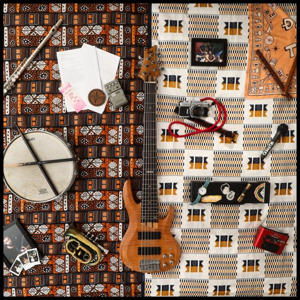
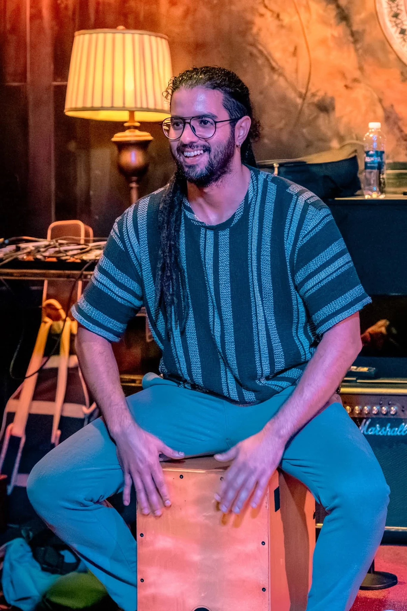

The first stages
Performing with an Arabic Tarab ensemble and Western music bands at Cadi Ayyad University in Marrakech.
THE WORLD OF SOUPERCUSSION
Percussion at heart.
A world of rhythm in his hands.
01 / FEATURED JAZZ PERFORMANCE
Drums meet percussion.
A closer look at the live connection.
Vietnam National Academy of Music · Hanoi, Vietnam · 2025
Souhail Martah: bongos, djembe, Vietnamese drum and accessories.
Yussef Dayes · VinhSmith cover
THE CONVERSATION CONTINUES
Nate Smith cover
Drum intro with VinhSmith & Souhail
Watch on YouTube ↗
02 / ON RECORD · THE GRATONERS
I created and performed original percussion parts on seven of the album’s ten tracks, playing bongos, djembe and accessories. I am also credited as a composer.

03 / THE ARTIST
Souhail Martah.
Percussionist. DJ. Soupercussion.
My journey began in Morocco in 2015. Playing with bands across genres, I found a language in percussion: a way to connect musicians, cultures and the people in front of us.
From darbuka, riq and djembe to cajón, congas and bongos, I work with Arabic and African rhythms, jazz, hip-hop, reggae and Latin music. That curiosity also takes me into electronic, Balkan and Irish sounds.
“A space where people
can feel and move.”
MARRAKECH TO VIETNAM
Performing with an Arabic Tarab ensemble and Western music bands at Cadi Ayyad University in Marrakech.
Venues, festivals and events with J&J, exploring traditional Moroccan music alongside original compositions.
Collaborations with The Gratoners and jazz ensembles, four REC Tour editions, Gnawa performances with Amlal Band in Hanoi, and Tetra UQ at Soul Kitchen in Hội An.
Back in Morocco, I am based in Marrakech for live percussion, band collaborations, DJ sets and rhythm workshops.
04 / THE MOROCCAN YEARS
Performances from Morocco.
J&J Musical Band.
Discover more performances with Music Linked.
Explore Music Linked’s channel ↗05 / THE DJ SIDE
The same percussive instinct.
A different way to move.
As Soupercussion, I bring my percussion roots to DJ sets that move through funk, hip-hop, house, techno and drum & bass. Starting slow, I build the tempo and energy as the set unfolds.
SOUPERCUSSION / DNCR
Hué, Vietnam · 17–19 April 2026
Audio unavailable. Listen on YouTube ↗
Watch the session on YouTube ↗ON SOUNDCLOUD
Fusion House
A DJ set by Soupercussion.
06 / PHOTO GALLERY
On stage. In good company.
Click a photograph to explore.
MARRAKECH, MOROCCO
Based in Marrakech, Morocco. Get in touch for live percussion, band collaborations, DJ sets or rhythm workshops.
Discuss a booking ↗souhailmartah@gmail.com+212 605-039941